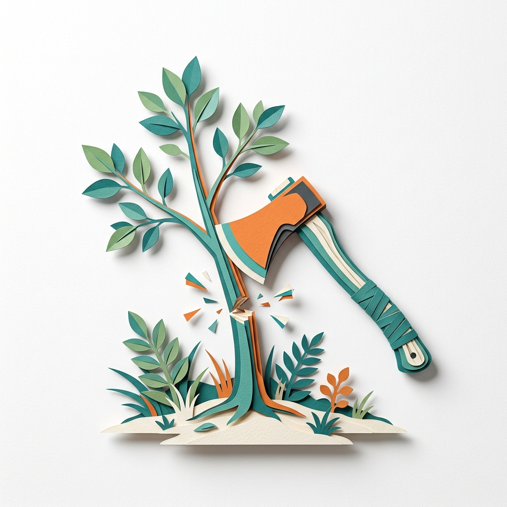
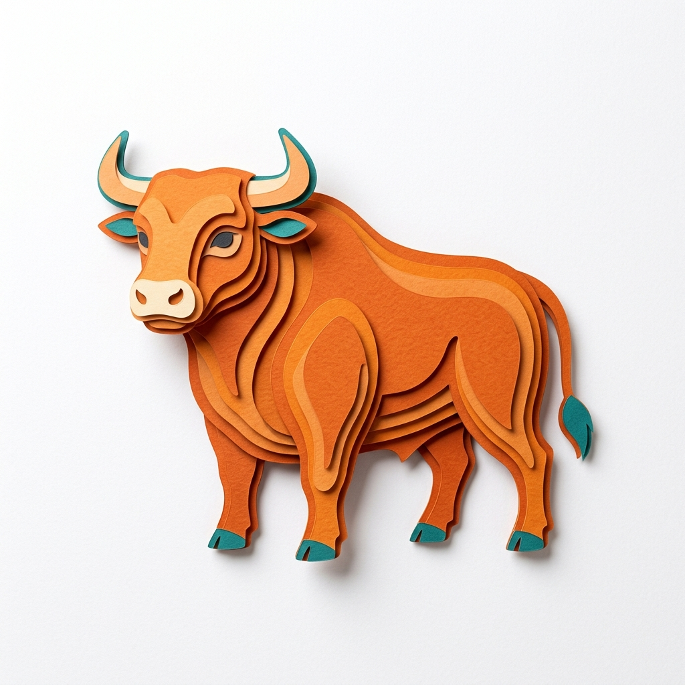
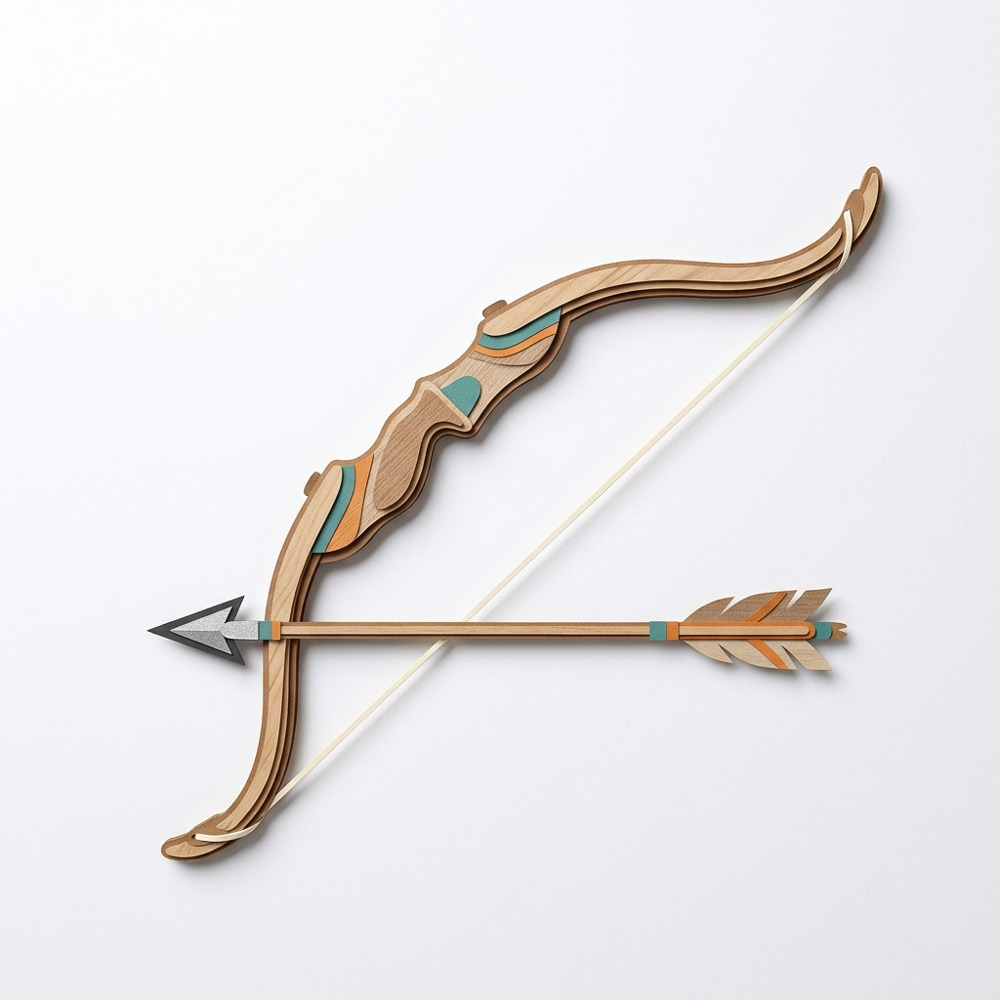

讀懂大師看似無招的日常特訓，發掘持之以恆的真正功夫
導讀簡報 | Antigravity Slide Builder
在許多人的眼裡，這位住在山上的白眉老人，是一個整天只會吃飯、睡覺的「老老人」。
然而，在一場月黑風高的夜晚，土匪頭「刀疤」帶著手下來襲，整個村莊陷入火海。在最危急的時刻，正是這位神秘大俠挺身而出，救走了三個無家可歸的小孩子。
白眉老人在屋後畫了個圈讓他們「蹲馬步」，並給每人派了特別的差事：



拖動滑桿，平滑看見三兄弟「十年前」與「十年後」的特訓對比變化：
危機關頭，三兄弟在電光石火間展現了驚人實力：
三兄弟這才恍然大悟：十年前的小樹苗長成大樹、小牛犢長成巨牛、小獵物鍛鍊出的動態視力——
原來，師父早在每天的功課中，把最深奧的功夫，一點一滴融進了他們的身體與生活中。真正的修行，並非在什麼秘笈 or 招式，而在於日常每一天的累積。
今天起，為自己的小樹苗澆水吧！
湯姆牛《功夫》繪本故事導讀報告 ． 謝謝大家